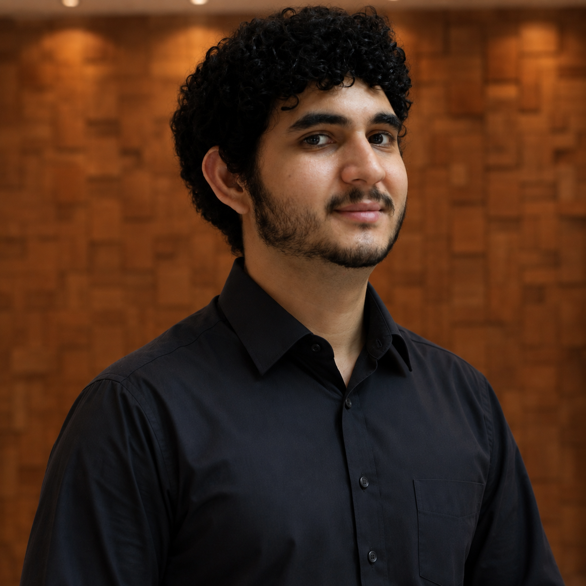

Olá, Seja Bem Vindo!

Oi! Me chamo Vinícius, um apaixonado por tecnologia, criatividade e tudo o que envolve colocar a mão na massa — principalmente se for pra fazer a diferença no mundo.
Sou universitário no Instituto Federal do Acre, onde estudo Sistemas para Internet, e também sou bolsista no WebAcademy, um projeto de capacitação fullstack que tem me desafiado (e motivado) todos os dias.
Além do código, meu coração também bate forte pelo escotismo. Levo comigo todas as virtudes de um escoteiro: responsabilidade, respeito, serviço ao próximo, e claro, estar "Sempre Alerta para Servir"!
Gosto de aprender coisas novas, organizar ideias, criar projetos e explorar soluções que unam propósito e inovação. Se você chegou até aqui por curiosidade, sinta-se em casa — meu portfólio é uma vitrine das coisas que gosto de fazer e estou aprendendo a fazer cada vez melhor.
Ah, e quando não estou programando ou acampando, provavelmente estou imaginando minha próxima aventura — seja ela digital ou em meio à natureza.